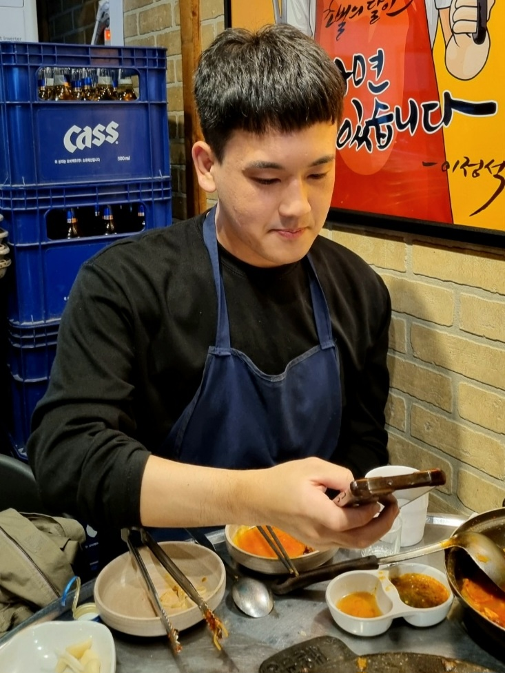

-
장준용 ISTJ
좋아하는 음식: 치킨
가고싶은 여행지: 일본
재밌게 본 영화: 인터스텔라
나의 장점: 적응력이 좋다! -
이용훈 INFJ
좋아하는 음식: 돈카츠
가고싶은 여행지: 터키
재밌게 본 영화: 그대들은 어떻게 살 것인가
나의 장점: 실행력이 좋다! -
이 율 INTP
좋아하는 음식: 샤브샤브
가고싶은 여행지: 리스본 호카곶
재밌게 본 영화: 오만과 편견
나의 장점: 긍정적이고 힘든 상황을 잘 이겨낸다! -

허 훈 INTJ
좋아하는 음식: 초밥
가고싶은 여행지: 미국 서부
재밌게 본 영화: 헤어질 결심
나의 장점: 도전하는 것을 즐긴다!